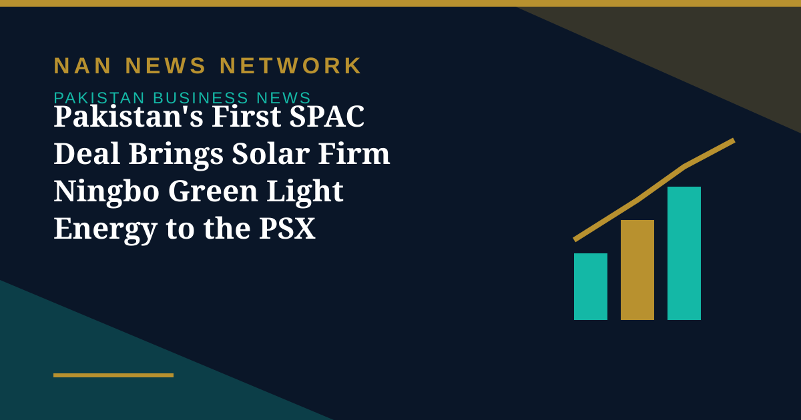

Pakistan's First SPAC Deal Brings Solar Firm Ningbo Green Light Energy to the PSX

The Pakistan Stock Exchange has welcomed Ningbo Green Light Energy Limited (NGLEL) to its Main Board, marking the successful completion of Pakistan's first-ever Special Purpose Acquisition Company (SPAC) transaction, Nukta reported on November 3.
How the listing worked
NGLEL was originally identified as the target company of LSE SPAC-I Limited. It completed the business combination through a Scheme of Arrangement sanctioned by the Lahore High Court on September 30, 2026. The transaction, structured and facilitated by LSE Capital, resulted in the merger of LSE SPAC-I into NGLEL, paving the way for the solar energy company to become publicly listed.
What NGLEL does
NGLEL operates in the renewable energy sector, specialising in solar engineering, procurement and construction (EPC), system integration, and operations and maintenance services. Speaking at a gong ceremony hosted by the PSX to mark the listing, PSX Director Ahmed Chinoy said the transaction marked a landmark achievement for the country's capital market, demonstrating how the SPAC framework can offer businesses an alternative route to access public markets.
Sources: Nukta, November 3, 2026
More on Pakistan Business News
- PSX Gains 1,454 Points to Close at 168,018 on Renewed Buying in Heavyweights
- PSX Recovers 155 Points to Close at 166,564 as Oil Prices Ease
- PSX in October: KSE-100 Fell 3,560 Points as War Fears and a Rate Hike Weighed
- Pakistan's Refineries Report 1,860% Profit Jump as War-Driven Margins Surge
- ABHI Microfinance Bank Plans Up to Rs3 Billion PSX IPO, Book-Building on November 5-6
- PSX Ends Four-Session Rally as Oil Surge Triggers Profit-Taking, Index Closes at 166,409
- Pakistan Cement Makers' Profits Rise 17% to Rs34.2 Billion in First Quarter of FY27
- Pakistan's Exports Rise 7.7% to $8.5 Billion but Trade Gap Widens in First Quarter
- SIFC Finalises 38 Projects Targeting $40 Billion in Investment, Senate Panel Told
- PSX Extends Recovery as KSE-100 Closes Above 167,000 on October 29
- Petrol, Diesel Prices Rise From October 29 as Government Revises Fuel Rates
- KSE-100 Gains 1,269 Points to Close Above 165,700
- Fauji Fertilizer's Nine-Month Profit Hits Rs71 Billion on Strong Urea Demand
- KSE-100 Climbs 1,428 Points to Close at 164,467 in Bullish Session
- Pakistan Signs $2.25 Billion Deal for Lithium Battery Gigafactory in Rawalpindi
- Gold Prices Rise by Rs1,400 per Tola in Pakistan on Monday
- Business Confidence Falls to 48 in October, State Bank Survey Shows
- Diesel Raised to Rs393.66 a Litre, Petrol Unchanged at Rs377.71
- FBR Activates Faceless Tax Audit System From October 15
- Pakistan-Iran Trade Disruption Puts $2.8 Billion Annual Trade at Stake